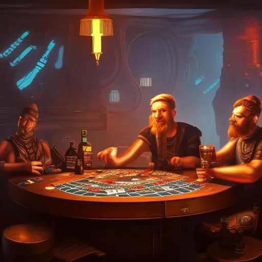

"Niraxus: Nova nada"
Kapetan: Emma Patel"

Datum: 20. januar 2300
Vrijeme: 21:00
GPS koordinate: 5.6N, 143.3W
Trenutačna lokacija: Približava se Jupiteru
Brzina: Standardna brzina krstarenja
Status trupa: 100%
Razine kisika: normalne
Status napajanja: 100%
Status tereta:
· Gorivo: 85%
· Prehrambeni artikli: odgovarajuća opskrba
· Kolonizacijski teret: Svi predmeti prisutni i evidentirani
Sigurnosni status: Svi sustavi normalni
Prizor se preselio u brodsku kuhinju, gdje se grupa od 14 marinaca okupila oko velikog stola. Soba je bila slabo osvijetljena, s nekoliko titrajućih fluorescentnih svjetala iznad glave. Zidovi su bili obloženi ormarićima i radnim pločama, a u kutu je zujao veliki hladnjak. Na glavnom stolu bilo je razbacanih pića i grickalica, a zrak je bio gust od mirisa kave i duhana.
narednik Michael Taylor, visok čovjek s gustom bradom, sjedio je na čelu stola i pušio kubansku cigaru. Bio je vođa mornaričke jedinice na brodu i izazivao je poštovanje svojih ljudi. Svi su marinci bili odjeveni u svoje standardne kombinezone i svi su bili naoružani standardnim bočnim oružjem.
Marinci su dugo igrali poker, a ulozi su bili visoki. Igrali su se "star kreditima", oblikom valute koju je posada broda koristila za razne transakcije. Utakmica je trajala satima, a igrači su bili duboko koncentrirani.
"Imam par osmica", rekao je vojnik Jenkins, šiljat mladić. Govor mu je bio nejasan, a pokreti spori i nesigurni, očito pijan.
"Sve sam za", rekla je desetnica Rodriguez, Hispanoamerička žena, gurajući svoj hrp zvjezdanih kredita naprijed.
"Odlazim", rekao je redov Lee, korejsko-američki vojnik, frustrirano bacajući svoje karte.
"Onda, koliko ti je ostalo, Jenkins?" upitao je narednik. Taylor, puše dim iz svoje cigare.
"Ne mnogo, tek toliko da me održi u igri", odgovorio je vojnik Jenkins, očiju usredotočenih na vojnika Leeja. "Ali imam osjećaj da me Lee vara. Nisam naivčina, znam kad me netko pokušava izvući."
Lice vojnika Leeja pocrvenjelo je od ljutnje. "O čemu, dovraga, pričaš? Ja nisam varalica!"
"Ti si prokleti lažljivac, eto što jesi!" Jenkins je promucao, ustao od stola i nagnuo se prema vojniku Leeju.
"Sjedni, Jenkins", narednik. Taylor je naredio, ali Jenkins je bio previše pijan da bi slušao.
"Ti si lopov, Lee! Kradeš od nas, a ja to neću podnijeti!" - povikao je Jenkins i prije nego što je itko uspio reagirati, zamahnuo je šakom i udario Leeja u lice.
Ostali marinci poskočili su sa svojih mjesta, neki su klicali, drugi se smijali.
"Borba! Borba! Borba!" povikali su, potičući dvojicu muškaraca.
Jenkins je izvukao pištolj i uperio ga u Leeja. – Ubit ću te, kurvin sine!
narednik Taylor je djelovao brzo, skočio i udario Jenkinsa u nos, slomivši ga. Zatim je zgrabio Jenkinsovo oružje i uperio ga u tlo.
"Dobro, dosta je!" povikao je, a glas mu je odjeknuo prostorijom. "Jenkins, uhićen si. Ostali, odstupite. Doc, siđite ovamo i odvedite Jenkinsa u bolnicu. Nije u stanju da drži oružje."
Liječnik je dojurio i pružio Jenkinsu prvu pomoć, a zatim ga odveo u bolnicu na daljnje liječenje.
narednik Taylor je tada naredio preostalim marincima da se vrate u svoje odaje i odmore. Igra pokera je zaboravljena, a jedino je ostao gorak okus nasilja i izdaje.
"Koji je to vrag bio?" upitao je kaplar Rodriguez, gledajući krv na podu.
"Samo još jedan dan na ovom prokletom brodu," narednik. Taylor je odgovorio odmahujući glavom. "Idite svi malo spavati. Pred nama je dugo putovanje."
Marinci su izašli iz sobe, ostavljajući narednika. Taylor sam sa svojim mislima. Nije se mogao otresti osjećaja da je ovo samo početak nečeg mnogo goreg što dolazi.